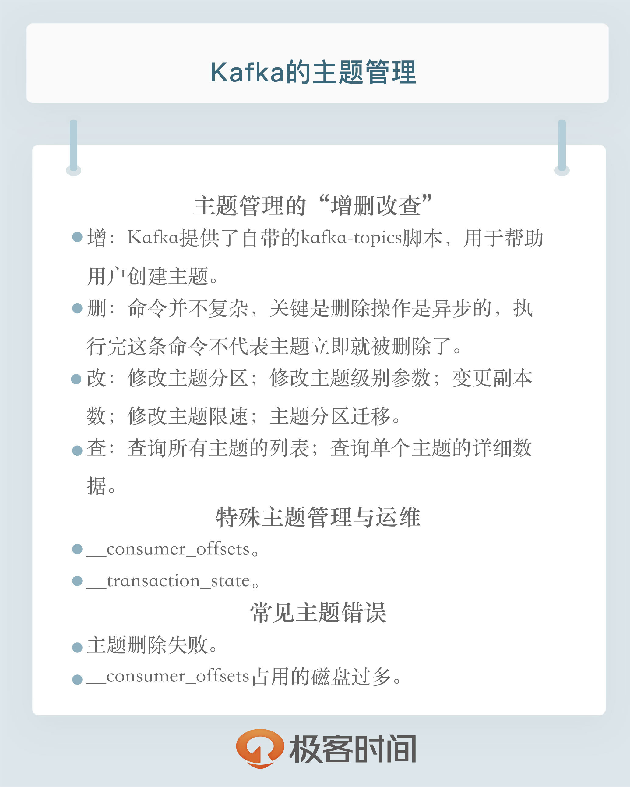

- 00 开篇词 为什么要学习Kafka？.md
- 01 消息引擎系统ABC.md
- 02 一篇文章带你快速搞定Kafka术语.md
- 03 Kafka只是消息引擎系统吗？.md
- 04 我应该选择哪种Kafka？.md
- 05 聊聊Kafka的版本号.md
- 06 Kafka线上集群部署方案怎么做？.md
- 07 最最最重要的集群参数配置（上）.md
- 08 最最最重要的集群参数配置（下）.md
- 09 生产者消息分区机制原理剖析.md
- 10 生产者压缩算法面面观.md
- 11 无消息丢失配置怎么实现？.md
- 12 客户端都有哪些不常见但是很高级的功能？.md
- 13 Java生产者是如何管理TCP连接的？.md
- 14 幂等生产者和事务生产者是一回事吗？.md
- 15 消费者组到底是什么？.md
- 16 揭开神秘的“位移主题”面纱.md
- 17 消费者组重平衡能避免吗？.md
- 18 Kafka中位移提交那些事儿.md
- 19 CommitFailedException异常怎么处理？.md
- 20 多线程开发消费者实例.md
- 21 Java 消费者是如何管理TCP连接的_.md
- 22 消费者组消费进度监控都怎么实现？.md
- 23 Kafka副本机制详解.md
- 24 请求是怎么被处理的？.md
- 25 消费者组重平衡全流程解析.md
- 26 你一定不能错过的Kafka控制器.md
- 27 关于高水位和Leader Epoch的讨论.md
- 28 主题管理知多少_.md
- 29 Kafka动态配置了解下？.md
- 30 怎么重设消费者组位移？.md
- 31 常见工具脚本大汇总.md
- 32 KafkaAdminClient：Kafka的运维利器.md
- 33 Kafka认证机制用哪家？.md
- 34 云环境下的授权该怎么做？.md
- 35 跨集群备份解决方案MirrorMaker.md
- 36 你应该怎么监控Kafka？.md
- 37 主流的Kafka监控框架.md
- 38 调优Kafka，你做到了吗？.md
- 39 从0搭建基于Kafka的企业级实时日志流处理平台.md
- 40 Kafka Streams与其他流处理平台的差异在哪里？.md
- 41 Kafka Streams DSL开发实例.md
- 42 Kafka Streams在金融领域的应用.md
- 加餐 搭建开发环境、阅读源码方法、经典学习资料大揭秘.md
- 用户故事 黄云：行百里者半九十.md
- 结束语 以梦为马，莫负韶华！.md
28 主题管理知多少_
你好，我是胡夕。今天我想和你讨论一下Kafka中的主题管理，包括日常的主题管理、特殊主题的管理与运维以及常见的主题错误处理。
主题日常管理
所谓的日常管理，无非就是主题的增删改查。你可能会觉得，这有什么好讨论的，官网上不都有命令吗？这部分内容的确比较简单，但它是我们讨论后面内容的基础。而且，在讨论的过程中，我还会向你分享一些小技巧。另外，我们今天讨论的管理手段都是借助于Kafka自带的命令。事实上，在专栏后面，我们还会专门讨论如何使用Java API的方式来运维Kafka集群。
我们先来学习一下如何使用命令创建Kafka主题。Kafka提供了自带的kafka-topics脚本，用于帮助用户创建主题。该脚本文件位于Kafka安装目录的bin子目录下。如果你是在Windows上使用Kafka，那么该脚本位于bin路径的windows子目录下。一个典型的创建命令如下：
bin/kafka-topics.sh --bootstrap-server broker_host:port --create --topic my_topic_name --partitions 1 --replication-factor 1
create表明我们要创建主题，而partitions和replication factor分别设置了主题的分区数以及每个分区下的副本数。如果你之前使用过这个命令，你可能会感到奇怪：难道不是指定 –zookeeper参数吗？为什么现在变成 –bootstrap-server了呢？我来给出答案：从Kafka 2.2版本开始，社区推荐用 –bootstrap-server参数替换 –zookeeper参数，并且显式地将后者标记为“已过期”，因此，如果你已经在使用2.2版本了，那么创建主题请指定 –bootstrap-server参数。
社区推荐使用 –bootstrap-server而非 –zookeeper的原因主要有两个。
- 使用 –zookeeper会绕过Kafka的安全体系。这就是说，即使你为Kafka集群设置了安全认证，限制了主题的创建，如果你使用 –zookeeper的命令，依然能成功创建任意主题，不受认证体系的约束。这显然是Kafka集群的运维人员不希望看到的。
- 使用 –bootstrap-server与集群进行交互，越来越成为使用Kafka的标准姿势。换句话说，以后会有越来越少的命令和API需要与ZooKeeper进行连接。这样，我们只需要一套连接信息，就能与Kafka进行全方位的交互，不用像以前一样，必须同时维护ZooKeeper和Broker的连接信息。
创建好主题之后，Kafka允许我们使用相同的脚本查询主题。你可以使用下面的命令，查询所有主题的列表。
bin/kafka-topics.sh --bootstrap-server broker_host:port --list
如果要查询单个主题的详细数据，你可以使用下面的命令。
bin/kafka-topics.sh --bootstrap-server broker_host:port --describe --topic <topic_name>
如果describe命令不指定具体的主题名称，那么Kafka默认会返回所有“可见”主题的详细数据给你。
这里的“可见”，是指发起这个命令的用户能够看到的Kafka主题。这和前面说到主题创建时，使用 –zookeeper和 –bootstrap-server的区别是一样的。如果指定了 –bootstrap-server，那么这条命令就会受到安全认证体系的约束，即对命令发起者进行权限验证，然后返回它能看到的主题。否则，如果指定 –zookeeper参数，那么默认会返回集群中所有的主题详细数据。基于这些原因，我建议你最好统一使用 –bootstrap-server连接参数。
说完了主题的“增”和“查”，我们说说如何“改”。Kafka中涉及到主题变更的地方有5处。
1.修改主题分区。
其实就是增加分区，目前Kafka不允许减少某个主题的分区数。你可以使用kafka-topics脚本，结合 –alter参数来增加某个主题的分区数，命令如下：
bin/kafka-topics.sh --bootstrap-server broker_host:port --alter --topic <topic_name> --partitions <新分区数>
这里要注意的是，你指定的分区数一定要比原有分区数大，否则Kafka会抛出InvalidPartitionsException异常。
2.修改主题级别参数。
在主题创建之后，我们可以使用kafka-configs脚本修改对应的参数。
这个用法我们在专栏第8讲中讨论过，现在先来复习一下。假设我们要设置主题级别参数max.message.bytes，那么命令如下：
bin/kafka-configs.sh --zookeeper zookeeper_host:port --entity-type topics --entity-name <topic_name> --alter --add-config max.message.bytes=10485760
也许你会觉得奇怪，为什么这个脚本就要指定 –zookeeper，而不是 –bootstrap-server呢？其实，这个脚本也能指定 –bootstrap-server参数，只是它是用来设置动态参数的。在专栏后面，我会详细介绍什么是动态参数，以及动态参数都有哪些。现在，你只需要了解设置常规的主题级别参数，还是使用 –zookeeper。
3.变更副本数。
使用自带的kafka-reassign-partitions脚本，帮助我们增加主题的副本数。这里先留个悬念，稍后我会拿Kafka内部主题__consumer_offsets来演示如何增加主题副本数。
4.修改主题限速。
这里主要是指设置Leader副本和Follower副本使用的带宽。有时候，我们想要让某个主题的副本在执行副本同步机制时，不要消耗过多的带宽。Kafka提供了这样的功能。我来举个例子。假设我有个主题，名为test，我想让该主题各个分区的Leader副本和Follower副本在处理副本同步时，不得占用超过100MBps的带宽。注意是大写B，即每秒不超过100MB。那么，我们应该怎么设置呢？
要达到这个目的，我们必须先设置Broker端参数leader.replication.throttled.rate和follower.replication.throttled.rate，命令如下：
bin/kafka-configs.sh --zookeeper zookeeper_host:port --alter --add-config 'leader.replication.throttled.rate=104857600,follower.replication.throttled.rate=104857600' --entity-type brokers --entity-name 0
这条命令结尾处的 –entity-name就是Broker ID。倘若该主题的副本分别在0、1、2、3多个Broker上，那么你还要依次为Broker 1、2、3执行这条命令。
设置好这个参数之后，我们还需要为该主题设置要限速的副本。在这个例子中，我们想要为所有副本都设置限速，因此统一使用通配符*来表示，命令如下：
bin/kafka-configs.sh --zookeeper zookeeper_host:port --alter --add-config 'leader.replication.throttled.replicas=*,follower.replication.throttled.replicas=*' --entity-type topics --entity-name test
5.主题分区迁移。
同样是使用kafka-reassign-partitions脚本，对主题各个分区的副本进行“手术”般的调整，比如把某些分区批量迁移到其他Broker上。这种变更比较复杂，我会在专栏后面专门和你分享如何做主题的分区迁移。
最后，我们来聊聊如何删除主题。命令很简单，我直接分享给你。
bin/kafka-topics.sh --bootstrap-server broker_host:port --delete --topic <topic_name>
删除主题的命令并不复杂，关键是删除操作是异步的，执行完这条命令不代表主题立即就被删除了。它仅仅是被标记成“已删除”状态而已。Kafka会在后台默默地开启主题删除操作。因此，通常情况下，你都需要耐心地等待一段时间。
特殊主题的管理与运维
说完了日常的主题管理操作，我们来聊聊Kafka内部主题consumer_offsets和transaction_state。前者你可能已经很熟悉了，后者是Kafka支持事务新引入的。如果在你的生产环境中，你看到很多带有consumer_offsets和transaction_state前缀的子目录，不用惊慌，这是正常的。这两个内部主题默认都有50个分区，因此，分区子目录会非常得多。
关于这两个内部主题，我的建议是不要手动创建或修改它们，还是让Kafka自动帮我们创建好了。不过这里有个比较隐晦的问题，那就是__consumer_offsets的副本数问题。
在Kafka 0.11之前，当Kafka自动创建该主题时，它会综合考虑当前运行的Broker台数和Broker端参数offsets.topic.replication.factor值，然后取两者的较小值作为该主题的副本数，但这就违背了用户设置offsets.topic.replication.factor的初衷。这正是很多用户感到困扰的地方：我的集群中有100台Broker，offsets.topic.replication.factor也设成了3，为什么我的__consumer_offsets主题只有1个副本？其实，这就是因为这个主题是在只有一台Broker启动时被创建的。
在0.11版本之后，社区修正了这个问题。也就是说，0.11之后，Kafka会严格遵守offsets.topic.replication.factor值。如果当前运行的Broker数量小于offsets.topic.replication.factor值，Kafka会创建主题失败，并显式抛出异常。
那么，如果该主题的副本值已经是1了，我们能否把它增加到3呢？当然可以。我们来看一下具体的方法。
第1步是创建一个json文件，显式提供50个分区对应的副本数。注意，replicas中的3台Broker排列顺序不同，目的是将Leader副本均匀地分散在Broker上。该文件具体格式如下：
{"version":1, "partitions":[
{"topic":"__consumer_offsets","partition":0,"replicas":[0,1,2]},
{"topic":"__consumer_offsets","partition":1,"replicas":[0,2,1]},
{"topic":"__consumer_offsets","partition":2,"replicas":[1,0,2]},
{"topic":"__consumer_offsets","partition":3,"replicas":[1,2,0]},
...
{"topic":"__consumer_offsets","partition":49,"replicas":[0,1,2]}
]}`
第2步是执行kafka-reassign-partitions脚本，命令如下：
bin/kafka-reassign-partitions.sh --zookeeper zookeeper_host:port --reassignment-json-file reassign.json --execute
除了修改内部主题，我们可能还想查看这些内部主题的消息内容。特别是对于__consumer_offsets而言，由于它保存了消费者组的位移数据，有时候直接查看该主题消息是很方便的事情。下面的命令可以帮助我们直接查看消费者组提交的位移数据。
bin/kafka-console-consumer.sh --bootstrap-server kafka_host:port --topic __consumer_offsets --formatter "kafka.coordinator.group.GroupMetadataManager\$OffsetsMessageFormatter" --from-beginning
除了查看位移提交数据，我们还可以直接读取该主题消息，查看消费者组的状态信息。
bin/kafka-console-consumer.sh --bootstrap-server kafka_host:port --topic __consumer_offsets --formatter "kafka.coordinator.group.GroupMetadataManager\$GroupMetadataMessageFormatter" --from-beginning
对于内部主题__transaction_state而言，方法是相同的。你只需要指定kafka.coordinator.transaction.TransactionLog\$TransactionLogMessageFormatter即可。
常见主题错误处理
最后，我们来说说与主题相关的常见错误，以及相应的处理方法。
常见错误1：主题删除失败。
当运行完上面的删除命令后，很多人发现已删除主题的分区数据依然“躺在”硬盘上，没有被清除。这时该怎么办呢？
实际上，造成主题删除失败的原因有很多，最常见的原因有两个：副本所在的Broker宕机了；待删除主题的部分分区依然在执行迁移过程。
如果是因为前者，通常你重启对应的Broker之后，删除操作就能自动恢复；如果是因为后者，那就麻烦了，很可能两个操作会相互干扰。
不管什么原因，一旦你碰到主题无法删除的问题，可以采用这样的方法：
第1步，手动删除ZooKeeper节点/admin/delete_topics下以待删除主题为名的znode。
第2步，手动删除该主题在磁盘上的分区目录。
第3步，在ZooKeeper中执行rmr /controller，触发Controller重选举，刷新Controller缓存。
在执行最后一步时，你一定要谨慎，因为它可能造成大面积的分区Leader重选举。事实上，仅仅执行前两步也是可以的，只是Controller缓存中没有清空待删除主题罢了，也不影响使用。
常见错误2：__consumer_offsets占用太多的磁盘。
一旦你发现这个主题消耗了过多的磁盘空间，那么，你一定要显式地用jstack命令查看一下kafka-log-cleaner-thread前缀的线程状态。通常情况下，这都是因为该线程挂掉了，无法及时清理此内部主题。倘若真是这个原因导致的，那我们就只能重启相应的Broker了。另外，请你注意保留出错日志，因为这通常都是Bug导致的，最好提交到社区看一下。
小结
我们来小结一下。今天我们着重讨论了Kafka的主题管理，包括日常的运维操作，以及如何对Kafka内部主题进行相应的管理。最后，我给出了两个最常见问题的解决思路。这里面涉及到了大量的命令，希望你能够在自己的环境中对照着实现一遍。另外，我也鼓励你去学习这些命令的其他用法，这会极大地丰富你的Kafka工具库。

开放讨论
请思考一下，为什么Kafka不允许减少分区数？如果减少分区数，可能会有什么样的问题？
欢迎写下你的思考和答案，我们一起讨论。如果你觉得有所收获，也欢迎把文章分享给你的朋友。
© 2019 - 2023 Liangliang Lee. Powered by gin and hexo-theme-book.